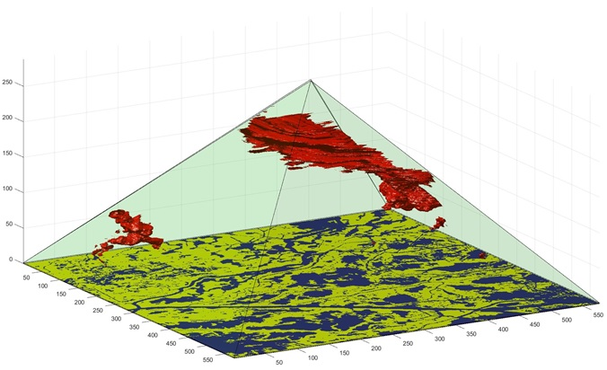
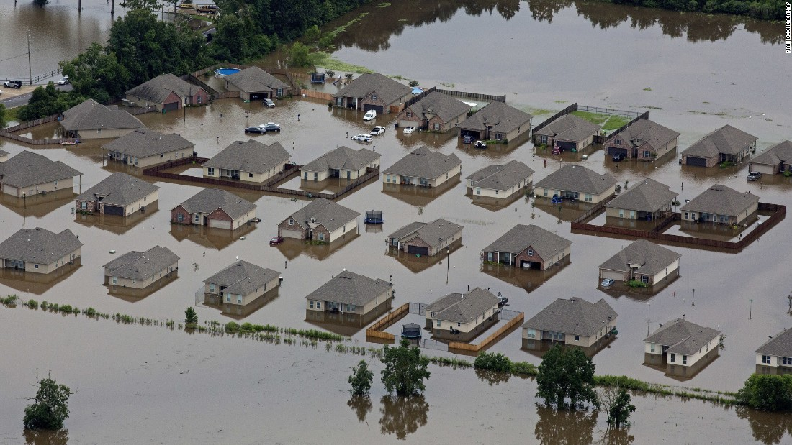
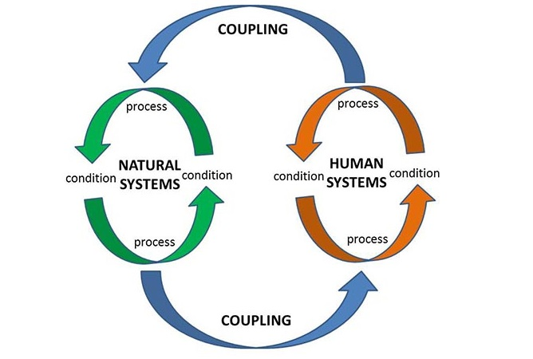

|  | In the Big Data era, geospatial data are generated at an amazing speed from different sources. Visual Analytics is critical in extract useful and actionable information from the jungle of data. My research has been focused on pattern detection and interactive exploration of multi-dimensional geospatial data using visualization techniques. I'm particularly interested in how the advancing cyberinfrastructure and emerging visualization techniques will convert the Big Data into Big Information and Big Knowledge |
With the emergence of Web 2.0, social media networks are becoming platforms where numerous users can publish and exchange information at any time in any place. In social media, every user acts as an intelligent sensor that collects and shares information about their surrounding environment. I'm currently working on projects that leverage social media data to understand human dynamics in natural hazards and climate change. |
|  | About disaster vulnerability and resilience, there are enough discussions. But few method can quantify these vague concepts and suggest effective and actionable strategies to reduce vulnerability and prompt resilience. I have been focusing on quantitatvie assessment of vulnerability and resilience using geospatial techniques and data-driven approaches. |
In earth sciences, it is more and more accepted that social and natural systems have to be coupled to be fully understood. Interactions between the systems are typically dynamic, non-linear and nested, which cannot be well explained by traditional statistical methods. The advancements of complex system, cyberinfrastructure, and artificial intelligence provide opportunities to investigate the complex interactions within a coupled natural and human (CNH) system. I combine GIS, data mining and geosimulation techniques to model dynamics of CNH systems in the context of natural hazards and climate change. |
 |
The modeling of space and time is fundamental in many disciplines. In GIS, time is conventionally represented as a linear thing. However, the linear time is not efficient for visualizing large quantity of time-dependent data. My Ph.D. (dissertation) research focused on an alternative representation of time, the Triangular Model, and its use analyzing time-dependent geospatial data. This model been applied in analyses of human mobility, archeological data, transportation, and climate data. More potential of this model in cross-scale analysis is yet to be explored. |